Correlation
▼Vary_Correlation_with_heavy_Tails (MvStudentT, correlation, 3 runs)
Pooled Chains results
Wasserstein Distance

Sampler vs IID stats
| Sampler | Varying | t-stat | p-value | Glass Δ |
|---|---|---|---|---|
| DEMetro_Z | 0.99 | 7.644 | 0.00169 | 5.865 |
| Metro | 0.99 | 1.091 | 0.389 | 217.182 |
| HMC | 0.99 | 1.962 | 0.152 | 2.766 |
| SMC | 0.99 | 2.242 | 0.149 | 9.314 |
Sampler vs Sampler stats
| Sampler Pair | Varying | t-stat | p-value | Cohen’s d |
|---|---|---|---|---|
| Metro_vs_SMC | 0.99 | 1.064 | 0.399 | 0.614 |
| DEMetro_Z_vs_SMC | 0.99 | -0.799 | 0.508 | -0.461 |
| HMC_vs_DEMetro_Z | 0.99 | -2.118 | 0.168 | -1.223 |
| HMC_vs_SMC | 0.99 | -2.292 | 0.149 | -1.324 |
| HMC_vs_Metro | 0.99 | -1.084 | 0.392 | -0.626 |
| Metro_vs_DEMetro_Z | 0.99 | 1.062 | 0.399 | 0.613 |
Wasserstein Distance (scatter)
Glass’s Δ WS
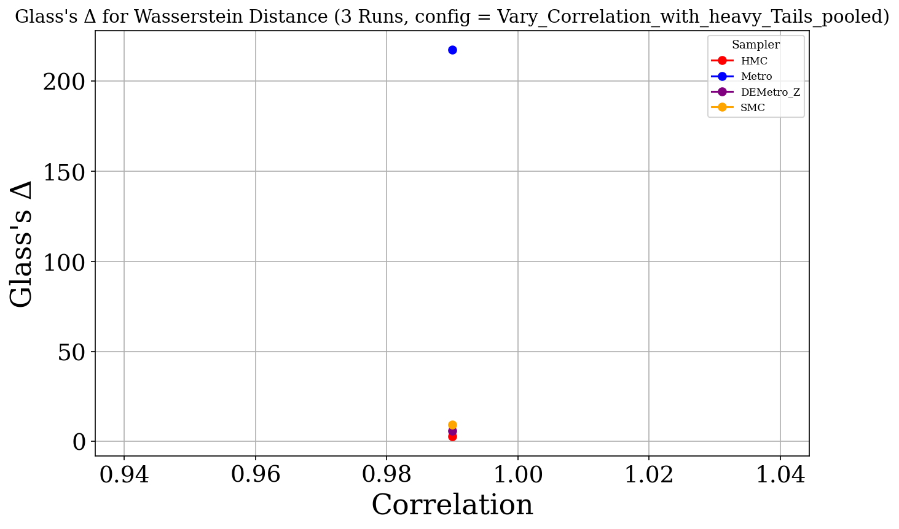
Glass’s Δ table
| Sampler | Varying | MCMC Mean | IID Mean | IID Std | Glass’s Δ |
|---|---|---|---|---|---|
| DEMetro_Z | 0.99 | 0.273 | 0.097 | 0.030 | 5.865 |
| Metro | 0.99 | 6.601 | 0.097 | 0.030 | 217.182 |
| HMC | 0.99 | 0.180 | 0.097 | 0.030 | 2.766 |
| SMC | 0.99 | 0.376 | 0.097 | 0.030 | 9.314 |
Mmd Rff

Sampler vs IID stats
| Sampler | Varying | t-stat | p-value | Glass Δ |
|---|---|---|---|---|
| DEMetro_Z | 0.99 | 3.756 | 0.0413 | 5.828 |
| Metro | 0.99 | 10.514 | 0.00673 | 30.245 |
| HMC | 0.99 | 0.959 | 0.424 | 1.846 |
| SMC | 0.99 | 2.762 | 0.107 | 15.227 |
Sampler vs Sampler stats
| Sampler Pair | Varying | t-stat | p-value | Cohen’s d |
|---|---|---|---|---|
| Metro_vs_SMC | 0.99 | 4.280 | 0.0505 | 2.471 |
| DEMetro_Z_vs_SMC | 0.99 | -2.217 | 0.157 | -1.280 |
| HMC_vs_DEMetro_Z | 0.99 | -6.416 | 0.0234 | -3.704 |
| HMC_vs_Metro | 0.99 | -20.686 | 0.00233 | -11.943 |
| Metro_vs_DEMetro_Z | 0.99 | 17.407 | 0.00328 | 10.050 |
| HMC_vs_SMC | 0.99 | -3.633 | 0.0681 | -2.098 |
Mmd Rff (scatter)
Glass’s Δ MMD-RFF
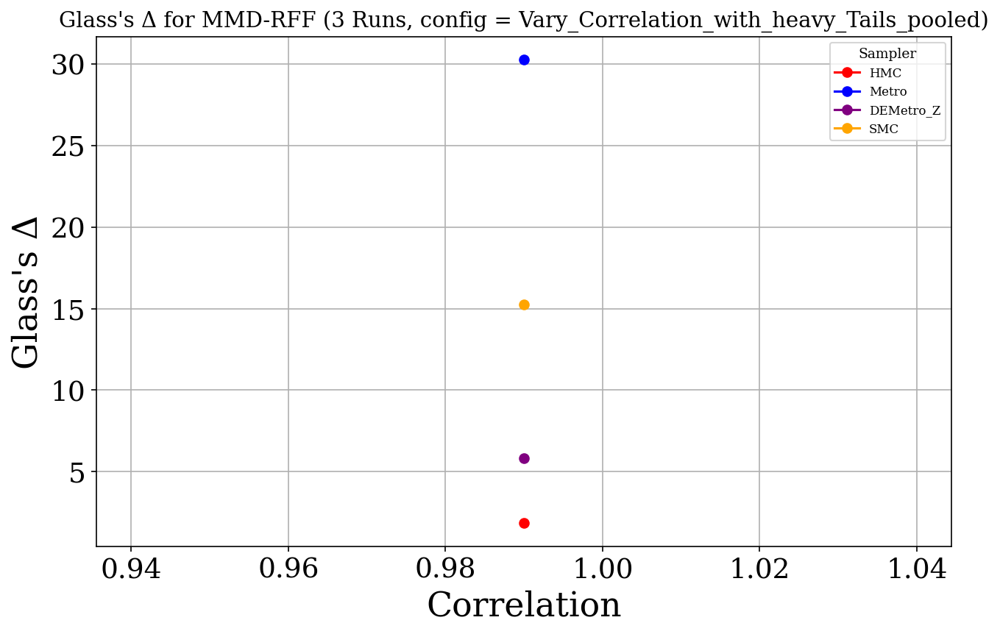
Glass’s Δ table
| Sampler | Varying | MCMC Mean | IID Mean | IID Std | Glass’s Δ |
|---|---|---|---|---|---|
| DEMetro_Z | 0.99 | 0.052 | 0.018 | 0.006 | 5.828 |
| Metro | 0.99 | 0.196 | 0.018 | 0.006 | 30.245 |
| HMC | 0.99 | 0.029 | 0.018 | 0.006 | 1.846 |
| SMC | 0.99 | 0.108 | 0.018 | 0.006 | 15.227 |
Runtime
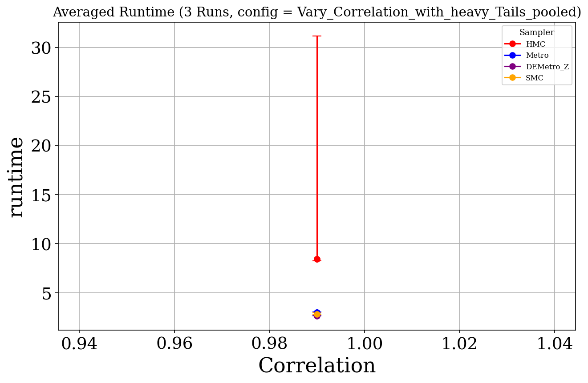
Runtime (scatter)
Ess
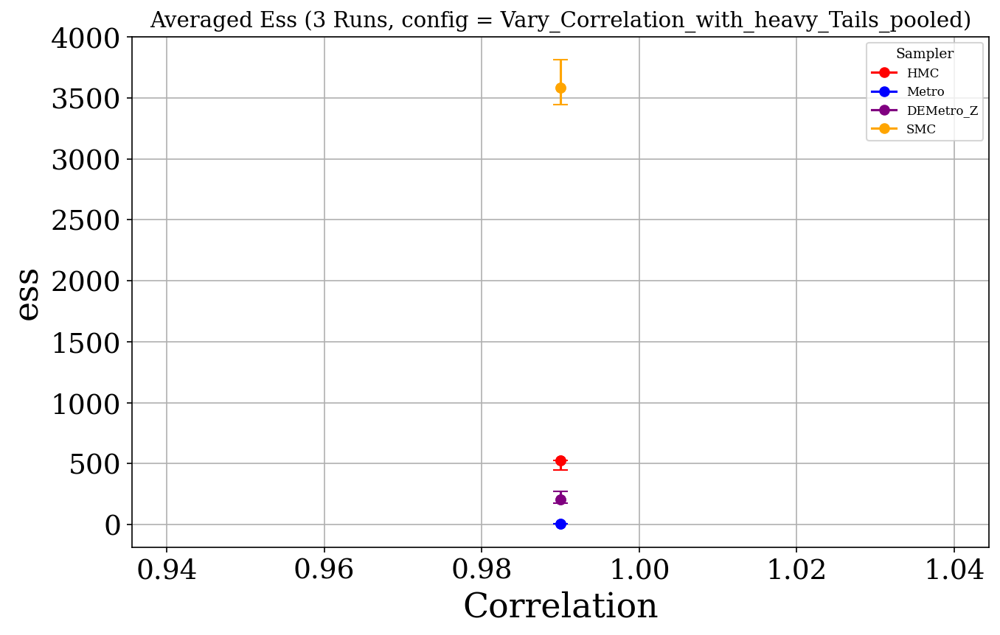
Ess (scatter)
Ess Per Sec
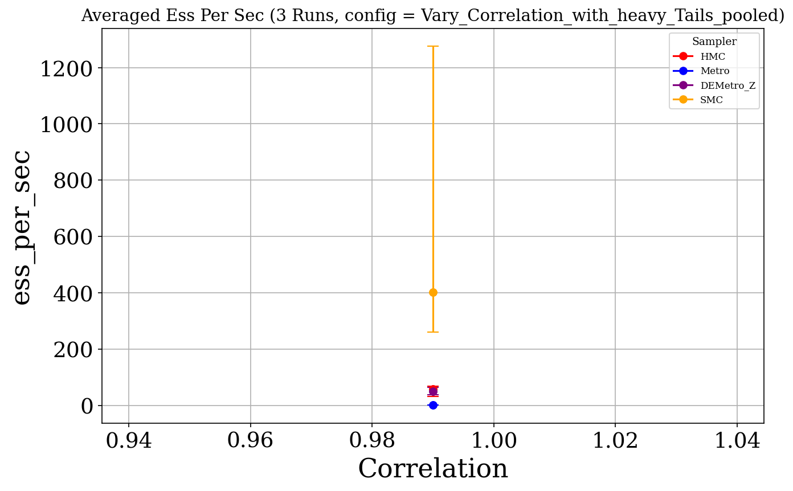
Ess Per Sec (scatter)
R Hat
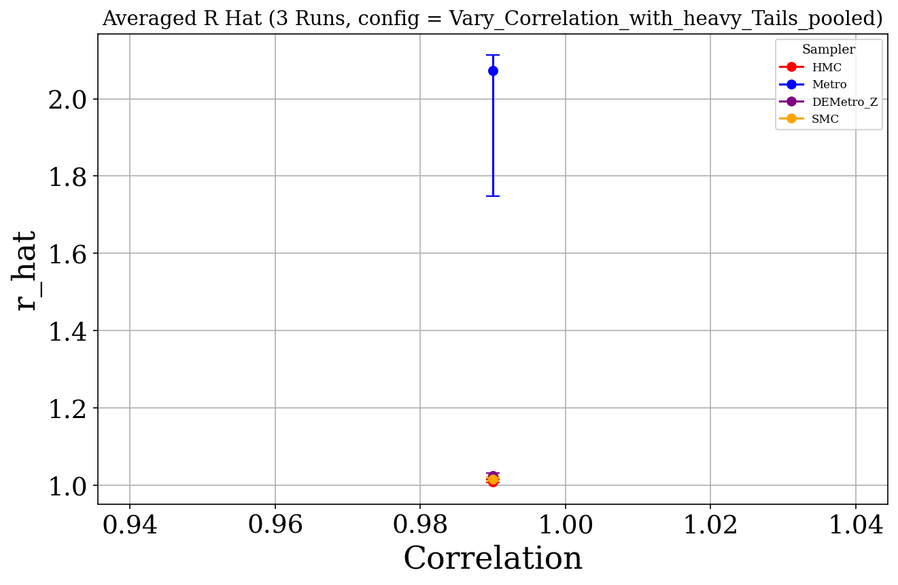
R Hat (scatter)
One Chain results
Wasserstein Distance
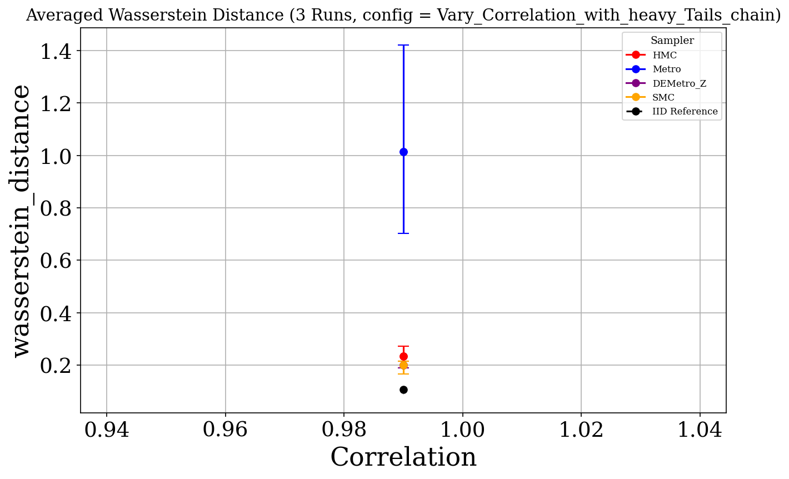
Sampler vs IID stats
| Sampler | Varying | t-stat | p-value | Glass Δ |
|---|---|---|---|---|
| DEMetro_Z | 0.99 | 4.702 | 0.00988 | 3.566 |
| Metro | 0.99 | 2.354 | 0.142 | 32.708 |
| HMC | 0.99 | 4.037 | 0.0269 | 5.007 |
| SMC | 0.99 | 2.678 | 0.0688 | 3.021 |
Sampler vs Sampler stats
| Sampler Pair | Varying | t-stat | p-value | Cohen’s d |
|---|---|---|---|---|
| Metro_vs_SMC | 0.99 | 2.000 | 0.183 | 1.155 |
| DEMetro_Z_vs_SMC | 0.99 | 0.373 | 0.745 | 0.215 |
| HMC_vs_DEMetro_Z | 0.99 | 2.368 | 0.141 | 1.367 |
| HMC_vs_SMC | 0.99 | 0.961 | 0.438 | 0.555 |
| HMC_vs_Metro | 0.99 | -2.165 | 0.163 | -1.250 |
| Metro_vs_DEMetro_Z | 0.99 | 2.177 | 0.161 | 1.257 |
Wasserstein Distance (scatter)
Glass’s Δ WS
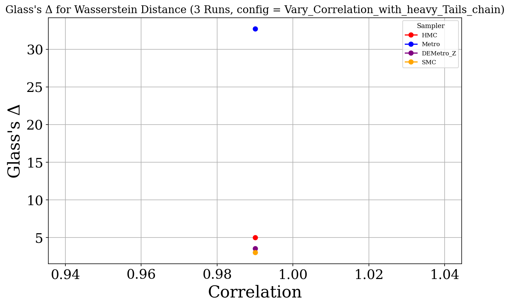
Glass’s Δ table
| Sampler | Varying | MCMC Mean | IID Mean | IID Std | Glass’s Δ |
|---|---|---|---|---|---|
| DEMetro_Z | 0.99 | 0.204 | 0.097 | 0.030 | 3.566 |
| Metro | 0.99 | 1.077 | 0.097 | 0.030 | 32.708 |
| HMC | 0.99 | 0.247 | 0.097 | 0.030 | 5.007 |
| SMC | 0.99 | 0.188 | 0.097 | 0.030 | 3.021 |
Mmd Rff
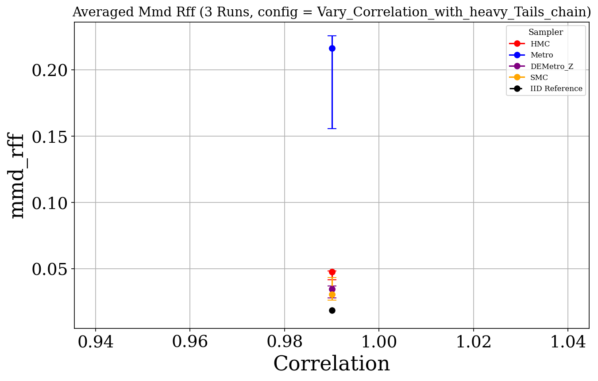
Sampler vs IID stats
| Sampler | Varying | t-stat | p-value | Glass Δ |
|---|---|---|---|---|
| DEMetro_Z | 0.99 | 2.116 | 0.114 | 2.289 |
| Metro | 0.99 | 3.727 | 0.0639 | 27.919 |
| HMC | 0.99 | 4.649 | 0.011 | 4.342 |
| SMC | 0.99 | 1.646 | 0.219 | 3.043 |
Sampler vs Sampler stats
| Sampler Pair | Varying | t-stat | p-value | Cohen’s d |
|---|---|---|---|---|
| Metro_vs_SMC | 0.99 | 2.726 | 0.112 | 1.574 |
| DEMetro_Z_vs_SMC | 0.99 | -0.291 | 0.799 | -0.168 |
| HMC_vs_DEMetro_Z | 0.99 | 6.702 | 0.0215 | 3.869 |
| HMC_vs_Metro | 0.99 | -3.494 | 0.073 | -2.017 |
| Metro_vs_DEMetro_Z | 0.99 | 3.905 | 0.0597 | 2.255 |
| HMC_vs_SMC | 0.99 | 0.524 | 0.653 | 0.302 |
Mmd Rff (scatter)
Glass’s Δ MMD-RFF
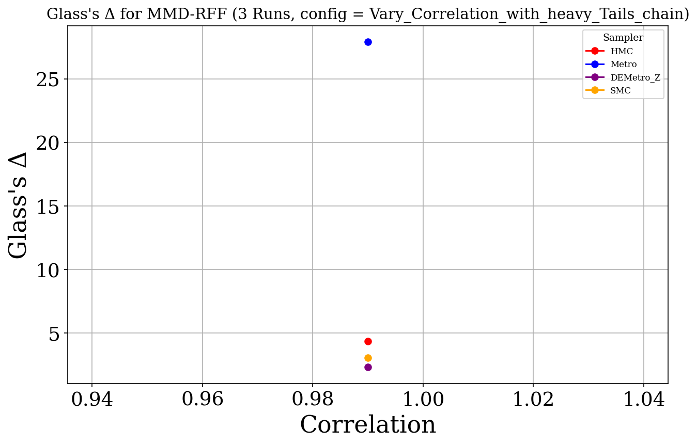
Glass’s Δ table
| Sampler | Varying | MCMC Mean | IID Mean | IID Std | Glass’s Δ |
|---|---|---|---|---|---|
| DEMetro_Z | 0.99 | 0.032 | 0.018 | 0.006 | 2.289 |
| Metro | 0.99 | 0.182 | 0.018 | 0.006 | 27.919 |
| HMC | 0.99 | 0.044 | 0.018 | 0.006 | 4.342 |
| SMC | 0.99 | 0.036 | 0.018 | 0.006 | 3.043 |
Runtime
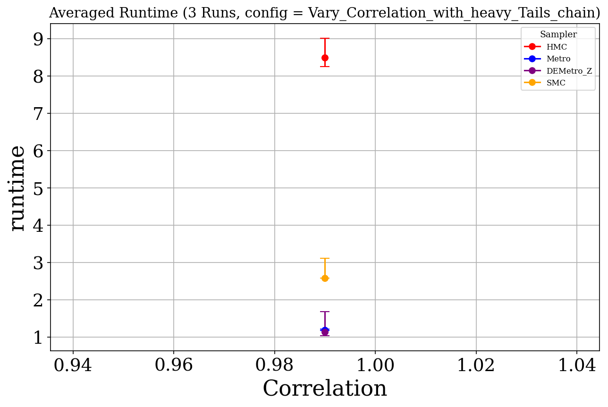
Runtime (scatter)
Ess
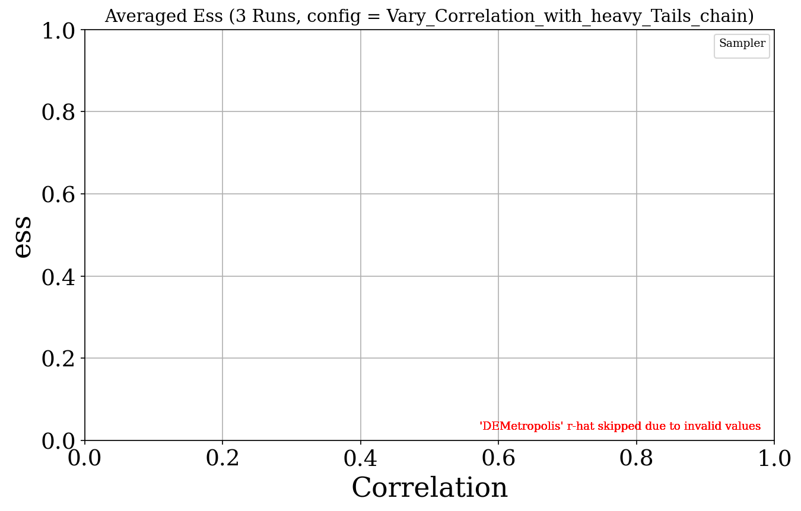
Ess Per Sec
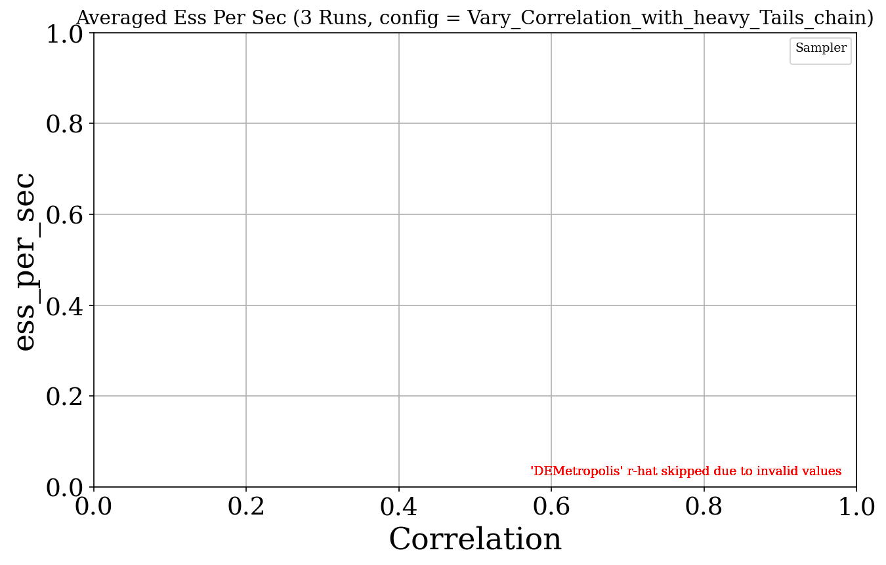
R Hat
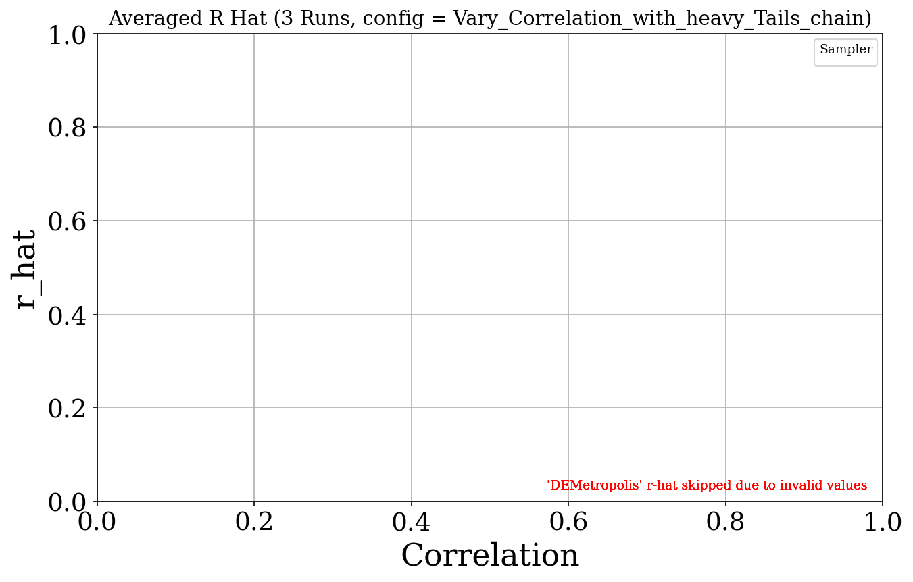
KDE + Init Plots
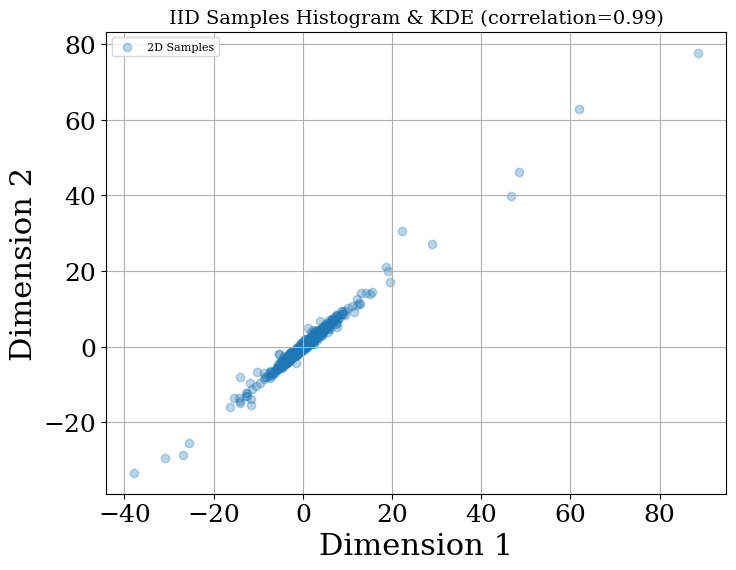
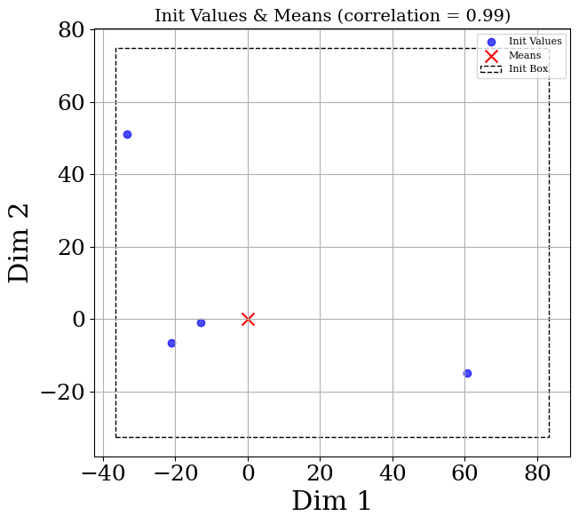
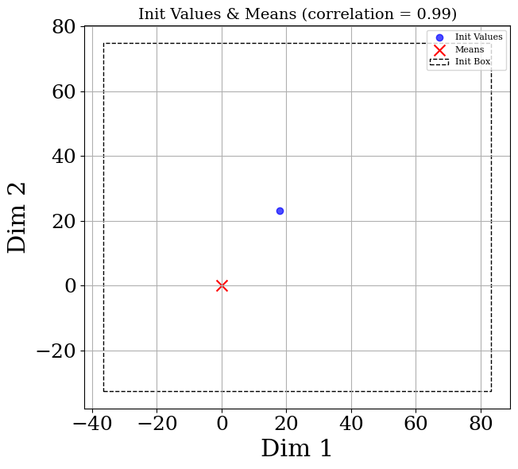
Trace Plots
Pooled
0.99
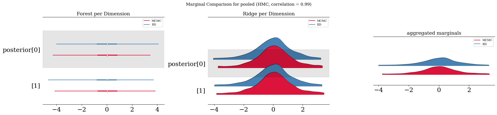
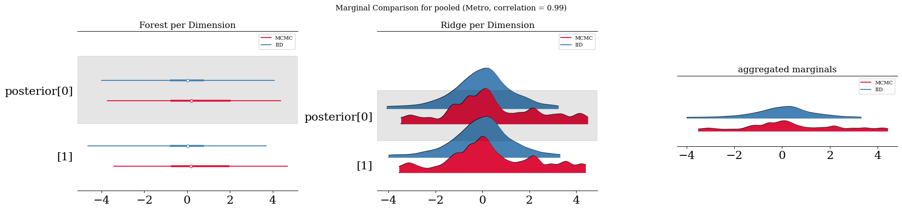
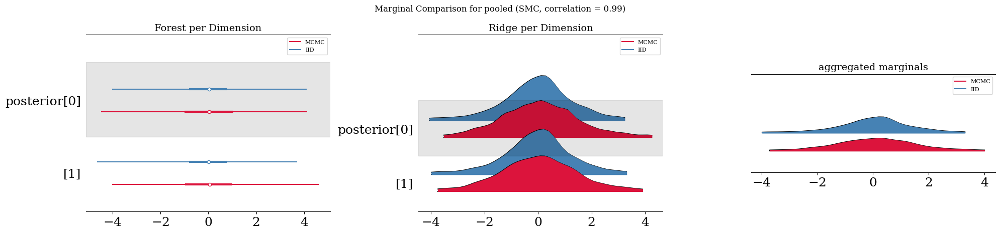
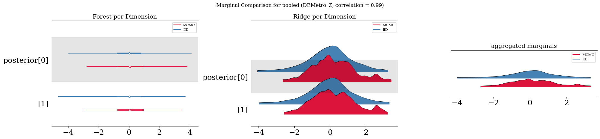
Chain
0.99
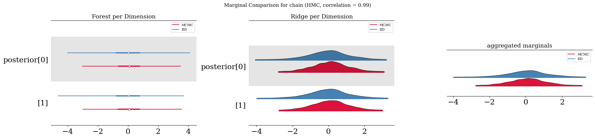
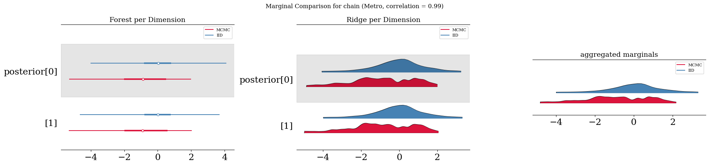
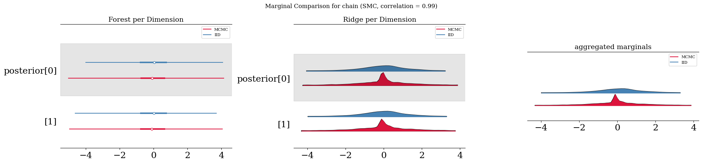
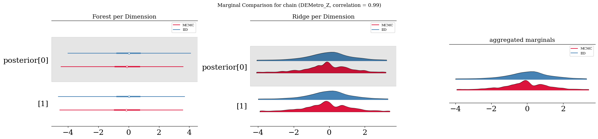
Pairwise Scatter Plots
Pooled
0.99
Chain
0.99